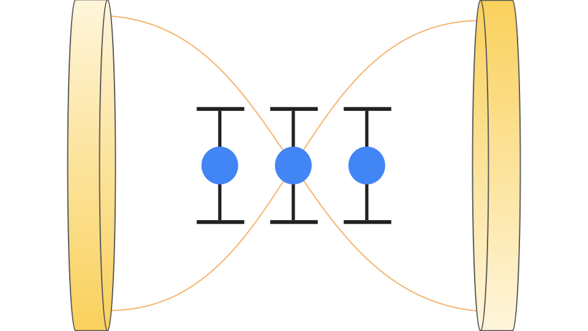

A Brief Note on Dark States in Cavity Polaritons
Disclaimer: this note assumes knowledge of quantum mechanics and familiarity with polaritonic or related (e.g. standard solid-state models) chemistry/physics!
In polaritonic chemistry, one considers an ensemble of two-level systems (TLS) coupled to an optical cavity. A commonly used simple model focuses on a single cavity mode interacting with the TLS in an excitation-conserving manner (i.e. when the cavity gains a photon the molecules lose a collective excitation and vice-versa):
The quantum harmonic oscillator operators are for the cavity, and the Pauli operators are for each TLS. and refer to the cavity frequency and the molecular transition frequency, respectively. Lastly, each is the coupling strength between the cavity and the corresponding TLS.
.png){kind=link}

Related Hamiltonians are ubiquitous in the polaritonic chemistry literature; a few highly-studied systems are the Jaynes-Cummings model, the Tavis-Cummings model, the Dicke model (slightly more general, no excitation conservation), and the Pauli-Fierz model (even more general, no excitation conservation). These models all, when studied without any disorder, assume identical couplings and molecular transition frequencies, i.e.
Notably, the above Hamiltonian conserves excitations. Thus, we can work in a fixed “excitation manifold.” Say we start with an excitation in the cavity and all TLS in the ground state. We can write this initial state like
Notice that when the Hamiltonian acts on this state, it is impossible to distinguish between any of the TLS. This means that the Hamiltonian must act on each of the TLS in the exact same way. Through the coupling term, we see that the matrix element between our initial state and a state with no excitations in the cavity and 1 total excitation across the TLS must be non-zero. But by our symmetry argument, this single excitation must be symmetrically distributed among the molecules, giving coupled state
where denotes an excitation in the th TLS. Fully symmetrized states like this are called “bright states” because they actually interact with the optical cavity, giving nontrivial dynamics. Most of my work revolves around bright states; a model that treats TLS symmetrically that also starts in a symmetric state can only yield other symmetric states, keeping the types of allowed states super confined. This restriction does allow for some nice speedups in simulation, though. For example, one can use angular momentum operators that describe the collective spin of the molecules instead of describing each spin individually and then symmetrizing.
However, recent theory (and some very exciting experimental work!) has focused a fair bit on “dark states.” Depending on the context, dark states can be defined in different ways. They’re all closely related, though. Here, we define dark states to be states that don’t couple to the cavity. In particular, for a singly excited dark state,
where is the interaction term of the Hamiltonian and is a dark state. Here’s an interesting way to think about constructing such a state with a single excitation across the TLS: if , will couple the overlap between the singly excited dark and bright states to . This is the opposite of what we want. So, it makes sense to try and construct a singly excited state orthogonal to the bright state we made. In fact, we can guarantee that such a state will not couple to the cavity because the molecular ground state is unique (up to global phase). A general molecular wave-function in the first excitation manifold is
Per orthogonality, we require
And wave-function normalization forces
These two give the dark state condition. Note that if the couplings weren’t equivalent, the dark state condition would just be that the sum of the coefficients weighted linearly by its corresponding coupling factor sums to 0. Physically, this can be understood as the net molecular dipole cancelling across the TLS. It’s easy to see one especially nice solution to these two equations given by the th roots of unity:
This obviously satisfies the normalization condition with each TLS excitation having magnitude 1. As for the net dipole cancelling, note that the coefficients can be understood as equally spaced points on the unit circle. Or, using the geometric series sum formula,
since the denominator is non-zero. Moreover, it’s not super hard to show that the dark basis above is actually independent. Thus, a complete basis for the molecular first excitation manifold is given by the above basis, which spans dimensions, in conjunction with the bright state.
I briefly alluded to my interest in this topic. More expressly, this note focuses on an idealized toy model. Introducing more complex interactions and even disorder mix dark and bright states in rich ways, yielding super interesting properties. This work by Engelhardt and Cao from 2022, for example, shows that dark states have a significant effect on spectroscopy of the cavity, especially for a large number of TLS. Dark states have also shown evidence of being experimentally interesting in perovskite nanocrystals in works such as this one by Tamarat et al, which demonstrates the significance of dark states in determining the optical emission of the nanocrystal. The connection between the rather niche field of cavity polaritonics and the more vast condensed matter experiment is cool!